<!DOCTYPE html
  PUBLIC "-//W3C//DTD HTML 4.01 Transitional//EN">

<html><html><body><div class="banner"><a href="../../../../index.html"></a></div></body></html><head>
<meta content="text/html; charset=utf-8" http-equiv="Content-Type"/>
<!--
This HTML was auto-generated from MATLAB code.
To make changes, update the MATLAB code and republish this document.
      --><title>Prismatic Beam under parametric excitation</title><meta content="MATLAB 9.14" name="generator"/><link href="http://purl.org/dc/elements/1.1/" rel="schema.DC"/><meta content="2023-09-01" name="DC.date"/><meta content="PrismaticBeamStretching_SD.m" name="DC.source"/><style type="text/css">
html,body,div,span,applet,object,iframe,h1,h2,h3,h4,h5,h6,p,blockquote,pre,a,abbr,acronym,address,big,cite,code,del,dfn,em,font,img,ins,kbd,q,s,samp,small,strike,strong,tt,var,b,u,i,center,dl,dt,dd,ol,ul,li,fieldset,form,label,legend,table,caption,tbody,tfoot,thead,tr,th,td{margin:0;padding:0;border:0;outline:0;font-size:100%;vertical-align:baseline;background:transparent}body{line-height:1}ol,ul{list-style:none}blockquote,q{quotes:none}blockquote:before,blockquote:after,q:before,q:after{content:'';content:none}:focus{outine:0}ins{text-decoration:none}del{text-decoration:line-through}table{border-collapse:collapse;border-spacing:0}

html { min-height:100%; margin-bottom:1px; }
html body { height:100%; margin:0px; font-family:Arial, Helvetica, sans-serif; font-size:10px; color:#000; line-height:140%; background:#fff none; overflow-y:scroll; }
html body td { vertical-align:top; text-align:left; }

h1 { padding:0px; margin:0px 0px 25px; font-family:Arial, Helvetica, sans-serif; font-size:1.5em; color:#d55000; line-height:100%; font-weight:normal; }
h2 { padding:0px; margin:0px 0px 8px; font-family:Arial, Helvetica, sans-serif; font-size:1.2em; color:#000; font-weight:bold; line-height:140%; border-bottom:1px solid #d6d4d4; display:block; }
h3 { padding:0px; margin:0px 0px 5px; font-family:Arial, Helvetica, sans-serif; font-size:1.1em; color:#000; font-weight:bold; line-height:140%; }

a { color:#005fce; text-decoration:none; }
a:hover { color:#005fce; text-decoration:underline; }
a:visited { color:#004aa0; text-decoration:none; }

p { padding:0px; margin:0px 0px 20px; }
img { padding:0px; margin:0px 0px 20px; border:none; }
p img, pre img, tt img, li img, h1 img, h2 img { margin-bottom:0px; }

ul { padding:0px; margin:0px 0px 20px 23px; list-style:square; }
ul li { padding:0px; margin:0px 0px 7px 0px; }
ul li ul { padding:5px 0px 0px; margin:0px 0px 7px 23px; }
ul li ol li { list-style:decimal; }
ol { padding:0px; margin:0px 0px 20px 0px; list-style:decimal; }
ol li { padding:0px; margin:0px 0px 7px 23px; list-style-type:decimal; }
ol li ol { padding:5px 0px 0px; margin:0px 0px 7px 0px; }
ol li ol li { list-style-type:lower-alpha; }
ol li ul { padding-top:7px; }
ol li ul li { list-style:square; }

.content { font-size:1.2em; line-height:140%; padding: 20px; }

pre, code { font-size:12px; }
tt { font-size: 1.2em; }
pre { margin:0px 0px 20px; }
pre.codeinput { padding:10px; border:1px solid #d3d3d3; background:#f7f7f7; }
pre.codeoutput { padding:10px 11px; margin:0px 0px 20px; color:#4c4c4c; }
pre.error { color:red; }

@media print { pre.codeinput, pre.codeoutput { word-wrap:break-word; width:100%; } }

span.keyword { color:#0000FF }
span.comment { color:#228B22 }
span.string { color:#A020F0 }
span.untermstring { color:#B20000 }
span.syscmd { color:#B28C00 }
span.typesection { color:#A0522D }

.footer { width:auto; padding:10px 0px; margin:25px 0px 0px; border-top:1px dotted #878787; font-size:0.8em; line-height:140%; font-style:italic; color:#878787; text-align:left; float:none; }
.footer p { margin:0px; }
.footer a { color:#878787; }
.footer a:hover { color:#878787; text-decoration:underline; }
.footer a:visited { color:#878787; }

table th { padding:7px 5px; text-align:left; vertical-align:middle; border: 1px solid #d6d4d4; font-weight:bold; }
table td { padding:7px 5px; text-align:left; vertical-align:top; border:1px solid #d6d4d4; }


  </style></head><body><div class="content"><h1>Prismatic Beam under parametric excitation</h1><!--introduction--><!--/introduction--><h2>Contents</h2><div><ul><li><a href="#2">Setup Dynamical System</a></li><li><a href="#4">Linear Modal Analysis</a></li><li><a href="#5">Stability Diagram from Reduced Dynamics</a></li><li><a href="#6">Verification: Collocation using <a href="https://sourceforge.net/p/cocotools/wiki/Home/">coco</a></a></li></ul></div><p>We consider a clamped-pinned beam.</p><p>Nayfeh [1] and Li [2] inverstigated the forced response of such a system under external harmonic response. Specifically, modal expansion (with linear modes) is used to transfer PDEs to a set of ODEs</p><p>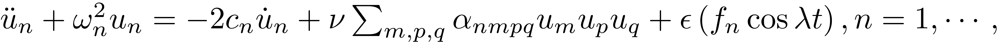</p><p>This set of ODEs has to be adjusted for the case where the harmonic excitation 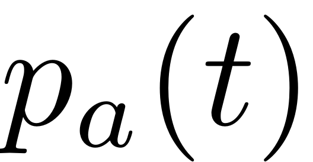 occurs in an axial direction and direct transverse excitation is applied as 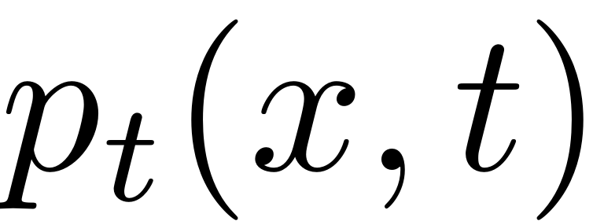, where 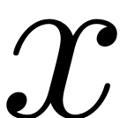 are dimensionless coordinates along the beam . Then the equations of the modal coordinates in transverse direction read</p><p>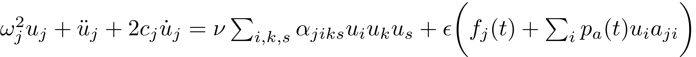</p><p>where the coefficients 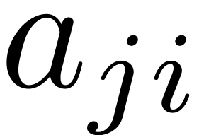 are defined in terms of the spatial eigenmodes as</p><p>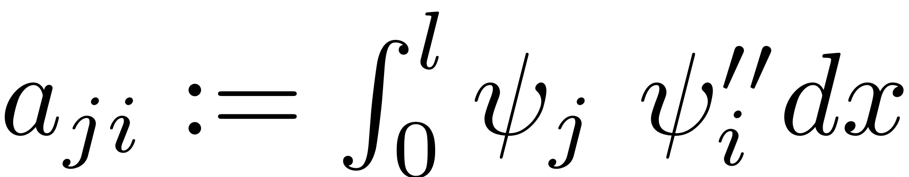</p><p>and</p><p>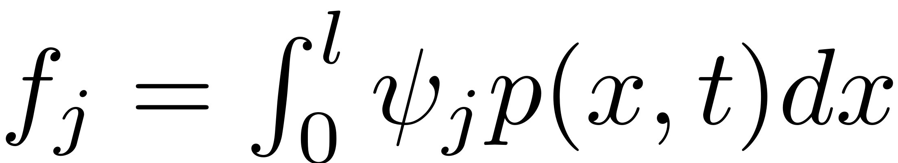</p><p>Here no mode is ecited externall so 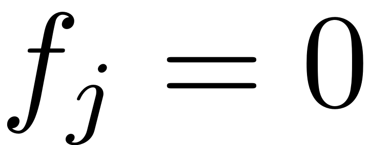 for all  and 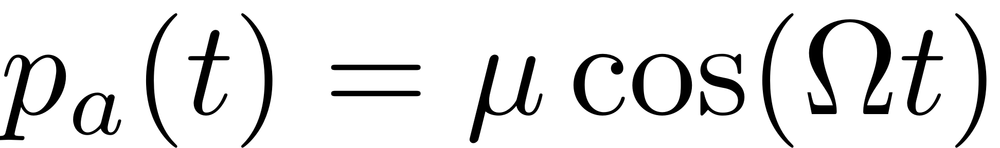. The system is forced around the principal resonance of the first mode so 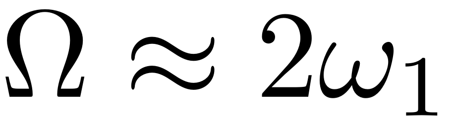</p><p>[1] Nayfeh, A. H., Mook, D. T., &amp; Sridhar, S. (1974). Nonlinear analysis of the forced response of structural elements. <i>The Journal of the Acoustical Society of America</i>, <i>55</i>(2), 281-291.</p><p>[2] M. Li, S. Jain, and G. Haller.  Nonlinear analysis of forced mechanical systems with internal resonance using spectralsubmanifolds–part I: Periodic response and forced response curve. <i>arXiv preprint</i> arXiv:2106.05162, 2021</p><h2 id="2">Setup Dynamical System</h2><pre class="codeinput">clear <span class="string">all</span>;

rLsq = 1e-4;
cs  = [100,200,300,400];
n = 10;               <span class="comment">% number of modes</span>

ii = 1;
<span class="keyword">for</span> c = cs
</pre><pre class="codeinput">[mass,damp,stiff,fnl,fext] = build_model_parametric(c,rLsq,n);

<span class="comment">% Create</span>
DS = <a href="../../../../Library/DynamicalSystem/DynamicalSystem.html">DynamicalSystem</a>();
set(DS,<span class="string">'M'</span>,mass,<span class="string">'C'</span>,damp,<span class="string">'K'</span>,stiff,<span class="string">'fnl'</span>,fnl);
set(DS.<a href="../../../../Library/Features/Options/Options.html">Options</a>,<span class="string">'Emax'</span>,5,<span class="string">'Nmax'</span>,10,<span class="string">'notation'</span>,<span class="string">'multiindex'</span>)
<span class="comment">% Forcing</span>
DS.<a href="../../../../Library/DynamicalSystem/add_forcing.html">add_forcing</a>(fext);
</pre><pre class="codeoutput">Getting nonlinearity coefficients
Loaded coefficients from storage
Loaded coefficients from storage

</pre><h2 id="4">Linear Modal Analysis</h2><pre class="codeinput"><span class="comment">% Analyse spectrum</span>
[V,D,W_evec] = DS.<a href="../../../../Library/DynamicalSystem/linear_spectral_analysis.html">linear_spectral_analysis</a>();

<span class="comment">% Choose Master subspace (perform resonance analysis)</span>

<span class="comment">% Set up SSM object</span>
S = <a href="../../../../Library/SSM/SSM.html">SSM</a>(DS);
set(S.<a href="../../../../Library/Features/Options/Options.html">Options</a>, <span class="string">'reltol'</span>, 0.3,<span class="string">'notation'</span>,<span class="string">'multiindex'</span>)

<span class="comment">%Choose Master subspace</span>
resModes = [1,2];
S.<a href="../../../../Library/Manifold/choose_E.html">choose_E</a>(resModes);
</pre><pre class="codeoutput">Due to high-dimensionality, we compute only the first 5 eigenvalues with the smallest magnitude. These would also be used to compute the spectral quotients
Assuming a proportional damping hypthesis with symmetric matrices
modal damping ratio for 1 mode is 1.874028e-03
modal damping ratio for 2 mode is 5.783382e-04
modal damping ratio for 3 mode is 2.772339e-04
modal damping ratio for 4 mode is 1.621083e-04
modal damping ratio for 5 mode is 1.062379e-04

 The first 10 nonzero eigenvalues are given as 
  -0.0100 + 5.3361i
  -0.0100 - 5.3361i
  -0.0100 +17.2909i
  -0.0100 -17.2909i
  -0.0100 +36.0706i
  -0.0100 -36.0706i
  -0.0100 +61.6872i
  -0.0100 -61.6872i
  -0.0100 +94.1284i
  -0.0100 -94.1284i

sigma_out = 1
sigma_in = 1
</pre><pre class="codeoutput">Due to high-dimensionality, we compute only the first 5 eigenvalues with the smallest magnitude. These would also be used to compute the spectral quotients
Assuming a proportional damping hypthesis with symmetric matrices
modal damping ratio for 1 mode is 3.748056e-03
modal damping ratio for 2 mode is 1.156676e-03
modal damping ratio for 3 mode is 5.544678e-04
modal damping ratio for 4 mode is 3.242166e-04
modal damping ratio for 5 mode is 2.124758e-04

 The first 10 nonzero eigenvalues are given as 
  -0.0200 + 5.3361i
  -0.0200 - 5.3361i
  -0.0200 +17.2909i
  -0.0200 -17.2909i
  -0.0200 +36.0706i
  -0.0200 -36.0706i
  -0.0200 +61.6872i
  -0.0200 -61.6872i
  -0.0200 +94.1284i
  -0.0200 -94.1284i

sigma_out = 1
sigma_in = 1

</pre><h2 id="5">Stability Diagram from Reduced Dynamics</h2><p>We extract the stability diagram using continuation of bifurcations. By extending the dynamical system</p><p></p><p>to an autonomous system of variables  the trivial fixed point  of the paremtrically excited system can be interpreted as the periodic orbit  . Any change of the stability behaviour of this periodic orbit is then given by some bifurcation. At the stability boundary of the principal resonance with  nontrivial periodic orbits with response period 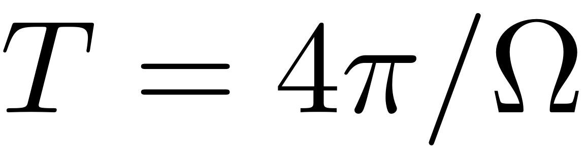 emerge. If continuation of  periodic orbits is used then these bifurcations show up as period doubling ('PD') bifurcations. Initially continuing 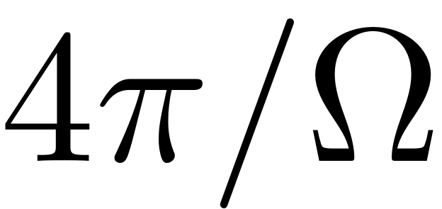 periodic orbits leads to a saddle node ('SN') bifurcation. The function extract_Stability_Diagram allows to chose between these two options for constructing the stability diagram. Settings</p><pre class="codeinput">set(S.contOptions,<span class="string">'PtMX'</span>,40,<span class="string">'bi_direct'</span>,true)
set(S.<a href="../../../../Library/Features/Options/Options.html">FRCOptions</a>,<span class="string">'branchSwitch'</span>,true)
PlotSD = false;
order  = 5;

<span class="comment">% Initial condition and parameter range</span>


omega0 = imag(S.E.spectrum(1));
p0 = [2*omega0,0.01]; <span class="comment">% Initial condition</span>

OmegaRange =[10.3,11];
epRange = [0,1];

<span class="comment">% Computation</span>

startSDSSM = tic;
SD = S.<a href="../../../../Library/Features/Wrappers/cocoWrapper/extract_Stability_Diagram.html">extract_Stability_Diagram</a>(resModes, order, OmegaRange,epRange,<span class="string">'amp'</span>, p0,<span class="string">'PD'</span>,PlotSD);
timings(ii).SDSSM = toc(startSDSSM);
</pre><h2>Damping Parameter: c = 100</h2><pre class="codeoutput">sigma_out = 1
sigma_in = 1
Manifold computation time at order 2 = 00:00:00
Estimated memory usage at order  2 = 5.72E-02 MB
Manifold computation time at order 3 = 00:00:00
Estimated memory usage at order  3 = 6.26E-02 MB
Manifold computation time at order 4 = 00:00:00
Estimated memory usage at order  4 = 7.27E-02 MB
Manifold computation time at order 5 = 00:00:00
Estimated memory usage at order  5 = 8.53E-02 MB

    STEP   DAMPING               NORMS              COMPUTATION TIMES
  IT SIT     GAMMA     ||d||     ||f||     ||U||   F(x)  DF(x)  SOLVE
   0                          0.00e+00  1.07e+01    0.0    0.0    0.0

 STEP      TIME        ||U||  LABEL  TYPE           eps    po.period
    0  00:00:00   1.0705e+01      1  EP      1.0000e-02   5.8874e-01
    1  00:00:00   1.0705e+01      2  EP      3.4694e-18   5.8874e-01

 STEP      TIME        ||U||  LABEL  TYPE           eps    po.period
    0  00:00:01   1.0705e+01      3  EP      1.0000e-02   5.8874e-01
    1  00:00:01   1.0705e+01      4  PD      5.3576e-02   5.8874e-01
    5  00:00:01   1.0798e+01      5  EP      1.0000e+00   5.8874e-01

 Run='ROM_family_bif1': Continue bifurcations from point 4 in run 'ROM_detect_bif'.

    STEP   DAMPING               NORMS              COMPUTATION TIMES
  IT SIT     GAMMA     ||d||     ||f||     ||U||   F(x)  DF(x)  SOLVE
   0                          5.59e-09  1.67e+01    0.0    0.0    0.0

 STEP      TIME        ||U||  LABEL  TYPE            om    po.period          eps
    0  00:00:00   1.6688e+01      1  EP      1.0672e+01   5.8874e-01   5.3576e-02
   10  00:00:04   1.6628e+01      2          1.0624e+01   5.9139e-01   1.3856e-01
   20  00:00:08   1.6459e+01      3          1.0479e+01   5.9959e-01   5.1992e-01
   26  00:00:11   1.6276e+01      4  EP      1.0300e+01   6.1002e-01   9.9843e-01

 STEP      TIME        ||U||  LABEL  TYPE            om    po.period          eps
    0  00:00:12   1.6688e+01      5  EP      1.0672e+01   5.8874e-01   5.3576e-02
   10  00:00:15   1.6750e+01      6          1.0720e+01   5.8612e-01   1.3856e-01
   20  00:00:19   1.6950e+01      7          1.0865e+01   5.7828e-01   5.1993e-01
   25  00:00:22   1.7152e+01      8  EP      1.1000e+01   5.7120e-01   8.7979e-01
Total time spent on Stability Diagram computation = 00:00:27
</pre><h2>Damping Parameter: c = 200</h2><pre class="codeoutput">sigma_out = 1
sigma_in = 1
Manifold computation time at order 2 = 00:00:00
Estimated memory usage at order  2 = 5.72E-02 MB
Manifold computation time at order 3 = 00:00:00
Estimated memory usage at order  3 = 6.26E-02 MB
Manifold computation time at order 4 = 00:00:00
Estimated memory usage at order  4 = 7.27E-02 MB
Manifold computation time at order 5 = 00:00:00
Estimated memory usage at order  5 = 8.53E-02 MB

    STEP   DAMPING               NORMS              COMPUTATION TIMES
  IT SIT     GAMMA     ||d||     ||f||     ||U||   F(x)  DF(x)  SOLVE
   0                          8.88e-16  1.07e+01    0.0    0.0    0.0

 STEP      TIME        ||U||  LABEL  TYPE           eps    po.period
    0  00:00:00   1.0705e+01      1  EP      1.0000e-02   5.8875e-01
    1  00:00:00   1.0705e+01      2  EP      3.4694e-18   5.8875e-01

 STEP      TIME        ||U||  LABEL  TYPE           eps    po.period
    0  00:00:00   1.0705e+01      3  EP      1.0000e-02   5.8875e-01
    2  00:00:00   1.0706e+01      4  PD      1.0715e-01   5.8875e-01
    5  00:00:00   1.0798e+01      5  EP      1.0000e+00   5.8875e-01

 Run='ROM_family_bif1': Continue bifurcations from point 4 in run 'ROM_detect_bif'.

    STEP   DAMPING               NORMS              COMPUTATION TIMES
  IT SIT     GAMMA     ||d||     ||f||     ||U||   F(x)  DF(x)  SOLVE
   0                          1.23e-08  1.67e+01    0.0    0.0    0.0

 STEP      TIME        ||U||  LABEL  TYPE            om    po.period          eps
    0  00:00:00   1.6688e+01      1  EP      1.0672e+01   5.8875e-01   1.0715e-01
   10  00:00:04   1.6576e+01      2          1.0581e+01   5.9382e-01   2.6675e-01
   20  00:00:08   1.6364e+01      3          1.0389e+01   6.0477e-01   7.6491e-01
   23  00:00:09   1.6277e+01      4  EP      1.0300e+01   6.1002e-01   1.0026e+00

 STEP      TIME        ||U||  LABEL  TYPE            om    po.period          eps
    0  00:00:10   1.6688e+01      5  EP      1.0672e+01   5.8875e-01   1.0715e-01
   10  00:00:13   1.6808e+01      6          1.0763e+01   5.8376e-01   2.6675e-01
   20  00:00:17   1.7084e+01      7          1.0955e+01   5.7355e-01   7.6493e-01
   22  00:00:18   1.7153e+01      8  EP      1.1000e+01   5.7120e-01   8.8481e-01
Total time spent on Stability Diagram computation = 00:00:20
</pre><h2>Damping Parameter: c = 300</h2><pre class="codeoutput">sigma_out = 1
sigma_in = 1
Manifold computation time at order 2 = 00:00:00
Estimated memory usage at order  2 = 5.72E-02 MB
Manifold computation time at order 3 = 00:00:00
Estimated memory usage at order  3 = 6.26E-02 MB
Manifold computation time at order 4 = 00:00:00
Estimated memory usage at order  4 = 7.27E-02 MB
Manifold computation time at order 5 = 00:00:00
Estimated memory usage at order  5 = 8.53E-02 MB

    STEP   DAMPING               NORMS              COMPUTATION TIMES
  IT SIT     GAMMA     ||d||     ||f||     ||U||   F(x)  DF(x)  SOLVE
   0                          8.88e-16  1.07e+01    0.0    0.0    0.0

 STEP      TIME        ||U||  LABEL  TYPE           eps    po.period
    0  00:00:00   1.0704e+01      1  EP      1.0000e-02   5.8875e-01
    1  00:00:00   1.0704e+01      2  EP      3.4694e-18   5.8875e-01

 STEP      TIME        ||U||  LABEL  TYPE           eps    po.period
    0  00:00:00   1.0704e+01      3  EP      1.0000e-02   5.8875e-01
    2  00:00:00   1.0707e+01      4  PD      1.6072e-01   5.8875e-01
    5  00:00:00   1.0797e+01      5  EP      1.0000e+00   5.8875e-01

 Run='ROM_family_bif1': Continue bifurcations from point 4 in run 'ROM_detect_bif'.

    STEP   DAMPING               NORMS              COMPUTATION TIMES
  IT SIT     GAMMA     ||d||     ||f||     ||U||   F(x)  DF(x)  SOLVE
   0                          1.12e-08  1.67e+01    0.0    0.0    0.0

 STEP      TIME        ||U||  LABEL  TYPE            om    po.period          eps
    0  00:00:00   1.6689e+01      1  EP      1.0672e+01   5.8875e-01   1.6072e-01
   10  00:00:04   1.6534e+01      2          1.0545e+01   5.9586e-01   3.7699e-01
   20  00:00:08   1.6289e+01      3          1.0312e+01   6.0930e-01   9.7729e-01
   21  00:00:08   1.6278e+01      4  EP      1.0300e+01   6.1002e-01   1.0095e+00

 STEP      TIME        ||U||  LABEL  TYPE            om    po.period          eps
    0  00:00:09   1.6689e+01      5  EP      1.0672e+01   5.8875e-01   1.6072e-01
   10  00:00:12   1.6859e+01      6          1.0799e+01   5.8181e-01   3.7699e-01
   20  00:00:17   1.7154e+01      7  EP      1.1000e+01   5.7120e-01   8.9312e-01
Total time spent on Stability Diagram computation = 00:00:18
</pre><h2>Damping Parameter: c = 400</h2><pre class="codeoutput">sigma_out = 1
sigma_in = 1
Manifold computation time at order 2 = 00:00:00
Estimated memory usage at order  2 = 5.72E-02 MB
Manifold computation time at order 3 = 00:00:00
Estimated memory usage at order  3 = 6.26E-02 MB
Manifold computation time at order 4 = 00:00:00
Estimated memory usage at order  4 = 7.27E-02 MB
Manifold computation time at order 5 = 00:00:00
Estimated memory usage at order  5 = 8.53E-02 MB

    STEP   DAMPING               NORMS              COMPUTATION TIMES
  IT SIT     GAMMA     ||d||     ||f||     ||U||   F(x)  DF(x)  SOLVE
   0                          0.00e+00  1.07e+01    0.0    0.0    0.0

 STEP      TIME        ||U||  LABEL  TYPE           eps    po.period
    0  00:00:00   1.0704e+01      1  EP      1.0000e-02   5.8876e-01
    1  00:00:00   1.0704e+01      2  EP      3.4694e-18   5.8876e-01

 STEP      TIME        ||U||  LABEL  TYPE           eps    po.period
    0  00:00:00   1.0704e+01      3  EP      1.0000e-02   5.8876e-01
    2  00:00:00   1.0709e+01      4  PD      2.1430e-01   5.8876e-01
    5  00:00:00   1.0797e+01      5  EP      1.0000e+00   5.8876e-01

 Run='ROM_family_bif1': Continue bifurcations from point 4 in run 'ROM_detect_bif'.

    STEP   DAMPING               NORMS              COMPUTATION TIMES
  IT SIT     GAMMA     ||d||     ||f||     ||U||   F(x)  DF(x)  SOLVE
   0                          7.35e-09  1.67e+01    0.0    0.0    0.0

 STEP      TIME        ||U||  LABEL  TYPE            om    po.period          eps
    0  00:00:00   1.6690e+01      1  EP      1.0672e+01   5.8876e-01   2.1430e-01
   10  00:00:04   1.6500e+01      2          1.0514e+01   5.9759e-01   4.7368e-01
   19  00:00:07   1.6279e+01      3  EP      1.0300e+01   6.1002e-01   1.0190e+00

 STEP      TIME        ||U||  LABEL  TYPE            om    po.period          eps
    0  00:00:08   1.6690e+01      4  EP      1.0672e+01   5.8876e-01   2.1430e-01
   10  00:00:11   1.6902e+01      5          1.0830e+01   5.8019e-01   4.7369e-01
   18  00:00:15   1.7155e+01      6  EP      1.1000e+01   5.7120e-01   9.0463e-01
Total time spent on Stability Diagram computation = 00:00:16
</pre><h2 id="6">Verification: Collocation using <a href="https://sourceforge.net/p/cocotools/wiki/Home/">coco</a></h2><p>Dankowicz, H., &amp; Schilder, F. (2013).  <i>Recipes for Continuation,</i> SIAM Philadelphia. <a href="https://doi.org/10.1137/1.9781611972573">https://doi.org/10.1137/1.9781611972573</a></p><pre class="codeinput">nCycles = 10;
coco_sd = <a href="../../../../Library/Features/Wrappers/cocoWrapper/cocoWrapper.html">cocoWrapper</a>(DS, nCycles, []);
set(coco_sd.<a href="../../../../Library/Features/Options/Options.html">Options</a>, <span class="string">'PtMX'</span>,70, <span class="string">'bi_direct'</span>,true);
set(coco_sd,<span class="string">'branchSwitch'</span>,true)

startcoco = tic;
SD_full = coco_sd.<a href="../../../../Library/Features/Wrappers/cocoWrapper/extract_Stability_Diagram.html">extract_Stability_Diagram</a>(OmegaRange,epRange,<span class="string">'amp'</span>,p0,<span class="string">'PD'</span>,PlotSD);
timings(ii).cocoSD = toc(startcoco);


name = strcat(<span class="string">'SD_damp'</span>,num2str(c),<span class="string">'n'</span>,num2str(n));
save(name, <span class="string">'SD'</span>,<span class="string">'SD_full'</span>)

ii = ii+1;
</pre><h2>Damping Parameter: c = 100</h2><pre class="codeoutput">
 Run='full_detect_bif': Continue primary family of periodic orbits.

    STEP   DAMPING               NORMS              COMPUTATION TIMES
  IT SIT     GAMMA     ||d||     ||f||     ||U||   F(x)  DF(x)  SOLVE
   0                          0.00e+00  1.51e+01    0.0    0.0    0.0

 STEP      TIME        ||U||  LABEL  TYPE           eps           om
    0  00:00:00   1.5104e+01      1  EP      1.0000e-02   1.0672e+01
    1  00:00:00   1.5104e+01      2  EP      3.4694e-18   1.0672e+01

 STEP      TIME        ||U||  LABEL  TYPE           eps           om
    0  00:00:01   1.5104e+01      3  EP      1.0000e-02   1.0672e+01
    1  00:00:01   1.5104e+01      4  PD      5.3576e-02   1.0672e+01
    5  00:00:02   1.5170e+01      5  EP      1.0000e+00   1.0672e+01

 Run='full_family_bif_1': Continue bifurcations from point 4 in run 'full_detect_bif'.

    STEP   DAMPING               NORMS              COMPUTATION TIMES
  IT SIT     GAMMA     ||d||     ||f||     ||U||   F(x)  DF(x)  SOLVE
   0                          2.00e-09  1.67e+01    0.0    0.0    0.0

 STEP      TIME        ||U||  LABEL  TYPE            om    po.period          eps
    0  00:00:00   1.6683e+01      1  EP      1.0672e+01   5.8874e-01   5.3576e-02
   10  00:00:04   1.5888e+01      2          1.0614e+01   5.9196e-01   1.6375e-01
   20  00:00:08   1.5681e+01      3          1.0473e+01   5.9994e-01   5.3188e-01
   24  00:00:11   1.5474e+01      4  EP      1.0300e+01   6.1002e-01   9.8404e-01

 STEP      TIME        ||U||  LABEL  TYPE            om    po.period          eps
    0  00:00:11   1.6683e+01      5  EP      1.0672e+01   5.8874e-01   5.3576e-02
   10  00:00:14   1.8313e+01      6          1.0686e+01   5.8798e-01   6.5272e-02
   20  00:00:18   2.1160e+01      7          1.0702e+01   5.8712e-01   9.5665e-02
   30  00:00:21   2.4639e+01      8          1.0723e+01   5.8595e-01   1.4685e-01
   40  00:00:26   2.8467e+01      9          1.0769e+01   5.8343e-01   2.6708e-01
   50  00:00:31   3.1148e+01     10          1.0926e+01   5.7509e-01   6.8987e-01
   55  00:00:33   3.1565e+01     11  EP      1.1000e+01   5.7120e-01   8.9590e-01
</pre><h2>Damping Parameter: c = 200</h2><pre class="codeoutput">
 Run='full_detect_bif': Continue primary family of periodic orbits.

    STEP   DAMPING               NORMS              COMPUTATION TIMES
  IT SIT     GAMMA     ||d||     ||f||     ||U||   F(x)  DF(x)  SOLVE
   0                          8.88e-16  1.51e+01    0.0    0.0    0.0

 STEP      TIME        ||U||  LABEL  TYPE           eps           om
    0  00:00:00   1.5104e+01      1  EP      1.0000e-02   1.0672e+01
    1  00:00:00   1.5104e+01      2  EP      3.4694e-18   1.0672e+01

 STEP      TIME        ||U||  LABEL  TYPE           eps           om
    0  00:00:00   1.5104e+01      3  EP      1.0000e-02   1.0672e+01
    2  00:00:01   1.5105e+01      4  PD      1.0715e-01   1.0672e+01
    5  00:00:02   1.5170e+01      5  EP      1.0000e+00   1.0672e+01

 Run='full_family_bif_1': Continue bifurcations from point 4 in run 'full_detect_bif'.

    STEP   DAMPING               NORMS              COMPUTATION TIMES
  IT SIT     GAMMA     ||d||     ||f||     ||U||   F(x)  DF(x)  SOLVE
   0                          8.14e-10  1.67e+01    0.0    0.0    0.0

 STEP      TIME        ||U||  LABEL  TYPE            om    po.period          eps
    0  00:00:00   1.6678e+01      1  EP      1.0672e+01   5.8875e-01   1.0715e-01
   10  00:00:04   1.5835e+01      2          1.0571e+01   5.9438e-01   2.9001e-01
   20  00:00:08   1.5578e+01      3          1.0387e+01   6.0491e-01   7.6235e-01
   22  00:00:10   1.5476e+01      4  EP      1.0300e+01   6.1002e-01   9.8814e-01

 STEP      TIME        ||U||  LABEL  TYPE            om    po.period          eps
    0  00:00:10   1.6678e+01      5  EP      1.0672e+01   5.8875e-01   1.0715e-01
   10  00:00:13   1.8323e+01      6          1.0700e+01   5.8721e-01   1.3073e-01
   20  00:00:17   2.1182e+01      7          1.0731e+01   5.8550e-01   1.9197e-01
   30  00:00:20   2.4674e+01      8          1.0774e+01   5.8317e-01   2.9487e-01
   40  00:00:25   2.8525e+01      9          1.0863e+01   5.7838e-01   5.2867e-01
   47  00:00:29   3.0637e+01     10  EP      1.1000e+01   5.7120e-01   9.0103e-01
</pre><h2>Damping Parameter: c = 300</h2><pre class="codeoutput">
 Run='full_detect_bif': Continue primary family of periodic orbits.

    STEP   DAMPING               NORMS              COMPUTATION TIMES
  IT SIT     GAMMA     ||d||     ||f||     ||U||   F(x)  DF(x)  SOLVE
   0                          8.88e-16  1.51e+01    0.0    0.0    0.0

 STEP      TIME        ||U||  LABEL  TYPE           eps           om
    0  00:00:00   1.5104e+01      1  EP      1.0000e-02   1.0672e+01
    1  00:00:00   1.5104e+01      2  EP      3.4694e-18   1.0672e+01

 STEP      TIME        ||U||  LABEL  TYPE           eps           om
    0  00:00:00   1.5104e+01      3  EP      1.0000e-02   1.0672e+01
    2  00:00:02   1.5106e+01      4  PD      1.6073e-01   1.0672e+01
    5  00:00:02   1.5170e+01      5  EP      1.0000e+00   1.0672e+01

 Run='full_family_bif_1': Continue bifurcations from point 4 in run 'full_detect_bif'.

    STEP   DAMPING               NORMS              COMPUTATION TIMES
  IT SIT     GAMMA     ||d||     ||f||     ||U||   F(x)  DF(x)  SOLVE
   0                          6.86e-09  1.67e+01    0.0    0.0    0.0

 STEP      TIME        ||U||  LABEL  TYPE            om    po.period          eps
    0  00:00:00   1.6673e+01      1  EP      1.0672e+01   5.8875e-01   1.6073e-01
   10  00:00:04   1.5800e+01      2          1.0539e+01   5.9618e-01   3.8848e-01
   20  00:00:09   1.5503e+01      3          1.0320e+01   6.0881e-01   9.4242e-01
   21  00:00:09   1.5479e+01      4  EP      1.0300e+01   6.1002e-01   9.9493e-01

 STEP      TIME        ||U||  LABEL  TYPE            om    po.period          eps
    0  00:00:10   1.6673e+01      5  EP      1.0672e+01   5.8875e-01   1.6073e-01
   10  00:00:13   1.8332e+01      6          1.0714e+01   5.8645e-01   1.9637e-01
   20  00:00:17   2.1203e+01      7          1.0761e+01   5.8388e-01   2.8889e-01
   30  00:00:21   2.4709e+01      8          1.0825e+01   5.8042e-01   4.4390e-01
   40  00:00:25   2.8558e+01      9          1.0953e+01   5.7366e-01   7.8087e-01
   43  00:00:27   2.9349e+01     10  EP      1.1000e+01   5.7120e-01   9.0953e-01
</pre><h2>Damping Parameter: c = 400</h2><pre class="codeoutput">
 Run='full_detect_bif': Continue primary family of periodic orbits.

    STEP   DAMPING               NORMS              COMPUTATION TIMES
  IT SIT     GAMMA     ||d||     ||f||     ||U||   F(x)  DF(x)  SOLVE
   0                          0.00e+00  1.51e+01    0.0    0.0    0.0

 STEP      TIME        ||U||  LABEL  TYPE           eps           om
    0  00:00:00   1.5104e+01      1  EP      1.0000e-02   1.0672e+01
    1  00:00:00   1.5104e+01      2  EP      3.4694e-18   1.0672e+01

 STEP      TIME        ||U||  LABEL  TYPE           eps           om
    0  00:00:00   1.5104e+01      3  EP      1.0000e-02   1.0672e+01
    2  00:00:02   1.5107e+01      4  PD      2.1431e-01   1.0672e+01
    5  00:00:02   1.5170e+01      5  EP      1.0000e+00   1.0672e+01

 Run='full_family_bif_1': Continue bifurcations from point 4 in run 'full_detect_bif'.

    STEP   DAMPING               NORMS              COMPUTATION TIMES
  IT SIT     GAMMA     ||d||     ||f||     ||U||   F(x)  DF(x)  SOLVE
   0                          4.72e-09  1.67e+01    0.0    0.0    0.0

 STEP      TIME        ||U||  LABEL  TYPE            om    po.period          eps
    0  00:00:00   1.6668e+01      1  EP      1.0672e+01   5.8876e-01   2.1431e-01
   10  00:00:04   1.5770e+01      2          1.0511e+01   5.9778e-01   4.7860e-01
   19  00:00:09   1.5483e+01      3  EP      1.0300e+01   6.1002e-01   1.0044e+00

 STEP      TIME        ||U||  LABEL  TYPE            om    po.period          eps
    0  00:00:09   1.6668e+01      4  EP      1.0672e+01   5.8876e-01   2.1431e-01
   10  00:00:12   1.8342e+01      5          1.0728e+01   5.8569e-01   2.6220e-01
   20  00:00:16   2.1226e+01      6          1.0791e+01   5.8226e-01   3.8642e-01
   30  00:00:20   2.4743e+01      7          1.0876e+01   5.7770e-01   5.9366e-01
   39  00:00:25   2.7938e+01      8  EP      1.1000e+01   5.7120e-01   9.2128e-01
</pre><pre class="codeinput"><span class="keyword">end</span>
</pre><p>Plot for paper</p><pre class="codeinput">timings
PBplotSD(n,cs); <span class="comment">% Plot SD for various damping parameters</span>
</pre><pre class="codeoutput">
</pre> <p class="footer"><br/><a href="https://www.mathworks.com/products/matlab/">Published with MATLAB® R2023a</a><br/></p></div><!--
##### SOURCE BEGIN #####
%% Prismatic Beam under parametric excitation
%
%%
% We consider a clamped-pinned beam. 
% 
% Nayfeh [1] and Li [2] inverstigated the forced response of such a system under 
% external harmonic response. Specifically, modal expansion (with linear modes) 
% is used to transfer PDEs to a set of ODEs
% 
% $$\ddot{u}_n+\omega_n^2u_n=-2c_n\dot{u}_n+\nu\sum_{m,p,q}\alpha_{nmpq}u_mu_pu_q+\epsilon\left(f_n\cos\lambda 
% t\right), n=1,\cdots,$$
% 
% This set of ODEs has to be adjusted for the case where the harmonic excitation  
% $p_a(t)$ occurs in an axial direction and direct transverse excitation is applied 
% as $p_t(x,t)$, where $x$ are dimensionless coordinates along the beam . Then 
% the equations of the modal coordinates in transverse direction read
% 
% $$\omega_j^2 u_j + \ddot{u}_j +  2c_j\dot{u}_j= \nu\sum_{i,k,s} \alpha_{jiks} 
% u_i u_k u_s   + \epsilon \bigg(f_j(t) + \sum_i p_a(t) u_i a_{ji}\bigg)$$
% 
% where the coefficients $a_{ji}$ are defined in terms of the spatial eigenmodes 
% as
% 
% $$a_{ji} := \int_0^l  \psi_j \ \psi''_i dx$$
% 
% and
% 
% $$f_j = \int_0^l  \psi_j p(x,t) dx$$
% 
% Here no mode is ecited externall so $f_j = 0$ for all $j$ and $p_a(t) = \mu 
% \cos(\Omega t)$. The system is forced around the principal resonance of the 
% first mode so $\Omega \approx 2\omega_1$
% 
% [1] Nayfeh, A. H., Mook, D. T., & Sridhar, S. (1974). Nonlinear analysis of 
% the forced response of structural elements. _The Journal of the Acoustical Society 
% of America_, _55_(2), 281-291.
% 
% [2] M. Li, S. Jain, and G. Haller.  Nonlinear analysis of forced mechanical 
% systems with internal resonance using spectralsubmanifolds–part I: Periodic 
% response and forced response curve. _arXiv preprint_ arXiv:2106.05162, 2021
%% Setup Dynamical System

clear all;

rLsq = 1e-4;
cs  = [100,200,300,400];
n = 10;               % number of modes

ii = 1;
for c = cs
[mass,damp,stiff,fnl,fext] = build_model_parametric(c,rLsq,n);

% Create 
DS = <a href="../../../../Library/DynamicalSystem/DynamicalSystem.html">DynamicalSystem</a>();
set(DS,'M',mass,'C',damp,'K',stiff,'fnl',fnl);
set(DS.<a href="../../../../Library/Features/Options/Options.html">Options</a>,'Emax',5,'Nmax',10,'notation','multiindex')
% Forcing
DS.<a href="../../../../Library/DynamicalSystem/add_forcing.html">add_forcing</a>(fext);
%% Linear Modal Analysis 

% Analyse spectrum
[V,D,W_evec] = DS.<a href="../../../../Library/DynamicalSystem/linear_spectral_analysis.html">linear_spectral_analysis</a>();

% Choose Master subspace (perform resonance analysis)

% Set up SSM object
S = <a href="../../../../Library/SSM/SSM.html">SSM</a>(DS);
set(S.<a href="../../../../Library/Features/Options/Options.html">Options</a>, 'reltol', 0.3,'notation','multiindex')

%Choose Master subspace
resModes = [1,2];
S.<a href="../../../../Library/Manifold/choose_E.html">choose_E</a>(resModes);
%% Stability Diagram from Reduced Dynamics
% We extract the stability diagram using continuation of bifurcations. By extending 
% the dynamical system
% 
% $$\mathbf{B}\dot{\mathbf{z}}=\mathbf{Az}+\mathbf{F}(\mathbf{z})+\epsilon\mathbf{G}(\mathbf{z},\phi)$$
% 
% to an autonomous system of variables $(\mathbf{z}, \tau) \in \mathbf{R}^N 
% \times S^1$ the trivial fixed point $\mathbf{z} =\mathbf{0}$ of the paremtrically 
% excited system can be interpreted as the periodic orbit $(\mathbf{z}, \tau ) 
% = (\mathbf{0}, t \ \textrm{mod} \ 2\pi )$ . Any change of the stability behaviour 
% of this periodic orbit is then given by some bifurcation. At the stability boundary 
% of the principal resonance with $\Omega \approx 2 \omega_0$ nontrivial periodic 
% orbits with response period $T = 4 \pi / \Omega$ emerge. If continuation of 
% $2 \pi / \Omega$ periodic orbits is used then these bifurcations show up as 
% period doubling ('PD') bifurcations. Initially continuing $4 \pi / \Omega$ periodic 
% orbits leads to a saddle node ('SN') bifurcation. The function extract_Stability_Diagram 
% allows to chose between these two options for constructing the stability diagram.
% Settings

set(S.contOptions,'PtMX',40,'bi_direct',true)
set(S.<a href="../../../../Library/Features/Options/Options.html">FRCOptions</a>,'branchSwitch',true)
PlotSD = false;
order  = 5;

% Initial condition and parameter range


omega0 = imag(S.E.spectrum(1));
p0 = [2*omega0,0.01]; % Initial condition
 
OmegaRange =[10.3,11];
epRange = [0,1];

% Computation

startSDSSM = tic;
SD = S.<a href="../../../../Library/Features/Wrappers/cocoWrapper/extract_Stability_Diagram.html">extract_Stability_Diagram</a>(resModes, order, OmegaRange,epRange,'amp', p0,'PD',PlotSD);
timings(ii).SDSSM = toc(startSDSSM);
%% Verification: Collocation using <https://sourceforge.net/p/cocotools/wiki/Home/ coco>
% Dankowicz, H., & Schilder, F. (2013).  _Recipes for Continuation,_ SIAM Philadelphia. 
% https://doi.org/10.1137/1.9781611972573

nCycles = 10;
coco_sd = <a href="../../../../Library/Features/Wrappers/cocoWrapper/cocoWrapper.html">cocoWrapper</a>(DS, nCycles, []);
set(coco_sd.<a href="../../../../Library/Features/Options/Options.html">Options</a>, 'PtMX',70, 'bi_direct',true);
set(coco_sd,'branchSwitch',true)

startcoco = tic;
SD_full = coco_sd.<a href="../../../../Library/Features/Wrappers/cocoWrapper/extract_Stability_Diagram.html">extract_Stability_Diagram</a>(OmegaRange,epRange,'amp',p0,'PD',PlotSD);
timings(ii).cocoSD = toc(startcoco);


name = strcat('SD_damp',num2str(c),'n',num2str(n));
save(name, 'SD','SD_full')

ii = ii+1;
end
%%
% Plot for paper
timings
PBplotSD(n,cs); % Plot SD for various damping parameters
##### SOURCE END #####
--></body></html>